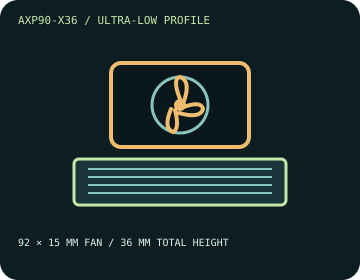

[ INDIVIDUAL COMPONENT // COOLING ]
Thermalright AXP90-X36
A 36 mm top-flow cooler using a 92 mm slim fan over a four-heatpipe heatsink, for systems with very limited CPU-cooler height.

IDENTIFICATION: The X36 is the standard aluminum-fin AXP90-X36, not a copper-base/fin variant. Check the model label and included bracket set.
Manufacturer specifications
| Overall dimensions | 94.5 × 95 × 36 mm with fan; heatsink alone is 94.5 × 95 × 21 mm. Published assembly weight: 230 g. |
|---|---|
| Fan / thermal limits | TL-9015, 92 × 92 × 15 mm; 2,700 RPM ±10% maximum, 42.58 CFM, 1.33 mm H₂O, 22.4 dBA, 0.18 A, 4-pin PWM. No radiator. Thermalright lists no model-specific TDP limit; choose CPU power settings only after checking real system thermals. |
| Mounting kit and sockets | Use the AXP90-X36 mounting kit identified by its installation guide. Thermalright lists Intel LGA 115x, 1200, 1700, 1851 and AMD AM4/AM5; check exact motherboard support and supplied revision. |
| Clearance caveats | Provide at least 36 mm vertical clearance and a 94.5 × 95 mm footprint. Check DIMMs, board heatsinks, PCIe and case geometry; very low cooler height does not ensure unobstructed airflow around the socket. |
Safe installation and maintenance
Install the socket-specific hardware in the manufacturer sequence. This low profile may depend heavily on unobstructed case intake and exhaust; do not assume a CPU's stock power limit is safe solely because the cooler fits. Disconnect power before service and renew thermal compound whenever the contact is disturbed.
- Route the PWM lead away from fan blades, RAM clips, and exposed board contacts.
- Monitor temperature and fan operation during a controlled first load.
Manufacturer sources
- Thermalright — AXP90-X36 product specificationsModel size, mass, fan parameters, and supported socket families.
- Thermalright — AXP90-X36 installation guide (PDF)Manufacturer mounting and installation instructions.
Static catalog reference only; inspect the actual unit and current manufacturer documentation before installation.